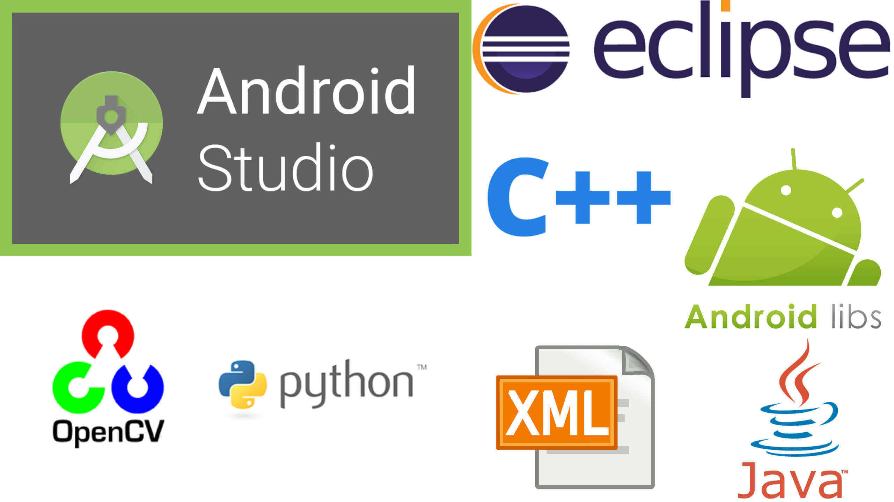
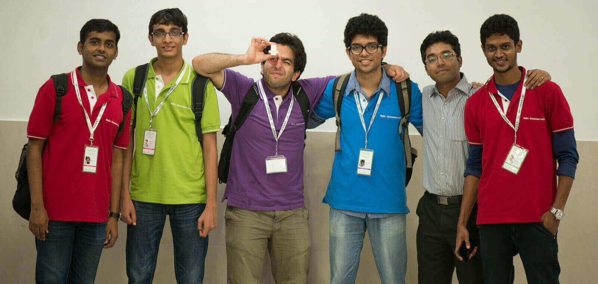
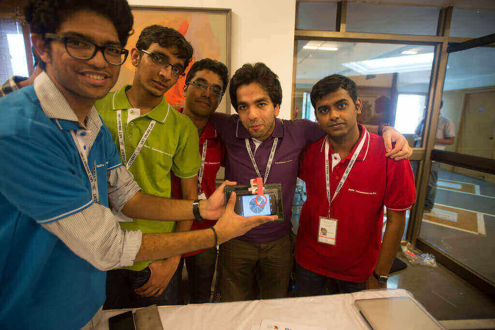
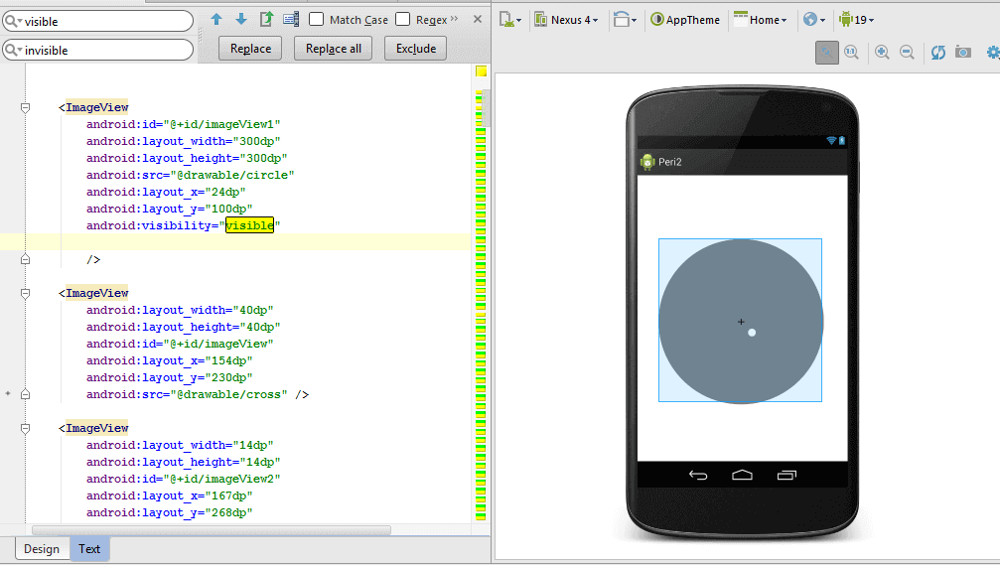
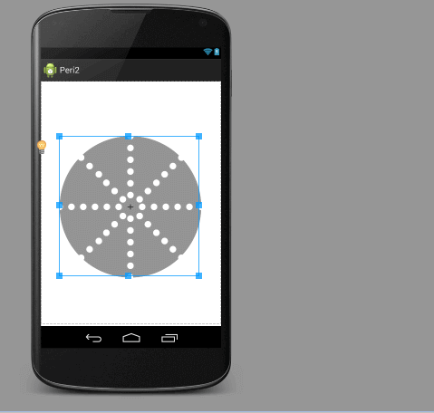
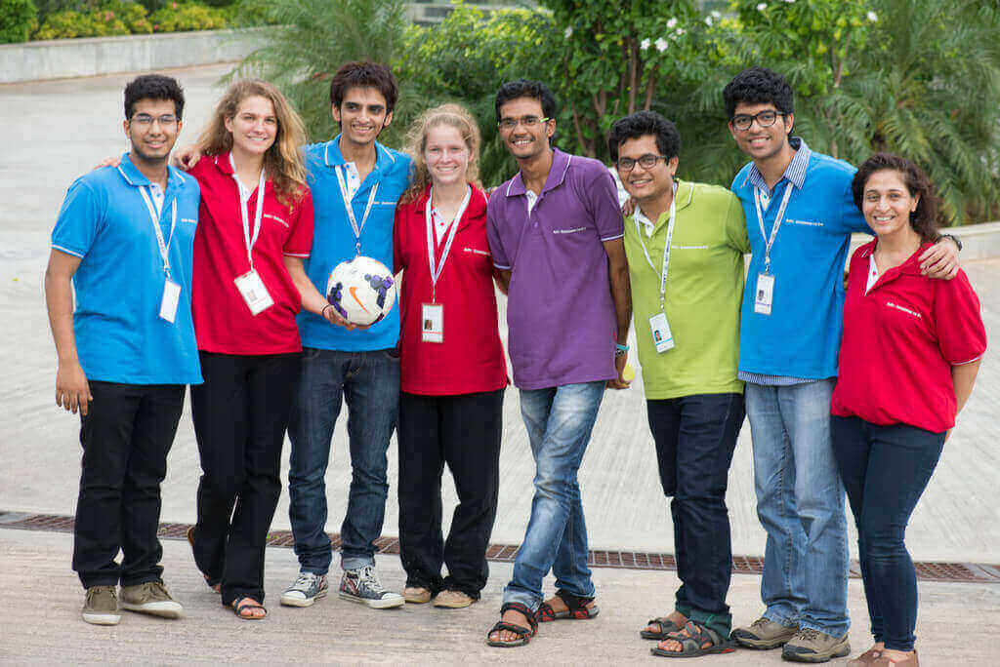
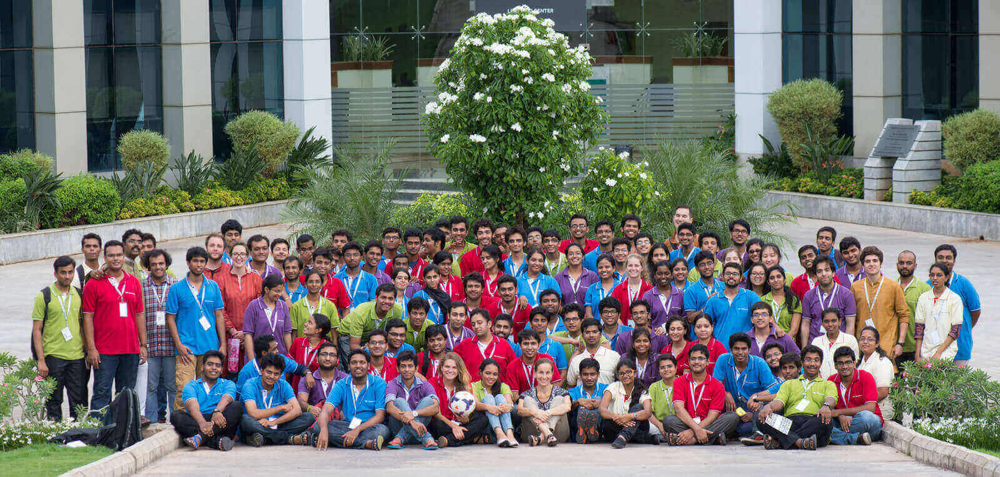

Tech Stack

Eye-Perimeter

The ReD-X Hyderabad 2014 was a boot camp held at Cyient for 7 days in association with MIT Media Labs and L.V. Prasad Eye Hospital. We were taken to L.V. Prasad Eye Hospital and got an opportunity to interact with patients, doctors and optometrists to gain a deep understanding of the eye and its functioning.

Our team consisted of 1 industrial designer, 2 optometrists and 3 engineers including myself. We were assigned a task to built a prototype consisting of a 3D printed hardware and an android app that would simulate a virtual Humphrey Perimeter test on the smartphone.

The Hardware design was about scaling the dimensions of a 28cm x 42cm Humphrey perimeter to that of a 15cm x 6cm tablet for precise alignment of the camera, smartphone, lens, and the tablet. By calculating the focal length, a lens was mounted onto the apparatus which will be held at the subjects eye level.

The Software comprised of an android app and an Open CV application written in Java and C++ respectively having a simple user interface which consists of a circular layer containing patterned dots that would flash randomly at random intervals across the plane. This helped us to generate a pattern accurately depicting areas of relative visual field loss. A camera was attached to the hardware through which we were able to track gaze through pupil recognition software.

During the entire week, we learned new things about the eye and its core components and along with visual field tests and acquired knowledge about Humphrey Perimeter. We were successful in packaging the entire functionality of the Perimeter into a smartphone application which helped us to showcase a proof of concept to show how health tests and modern technology can help bring diagnostics into a smartphone.

Source Code for this project is posted on Github.
